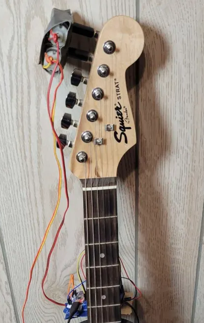
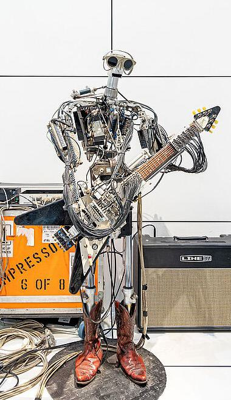
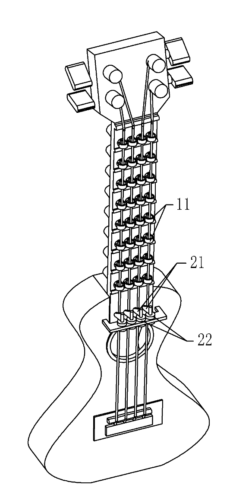
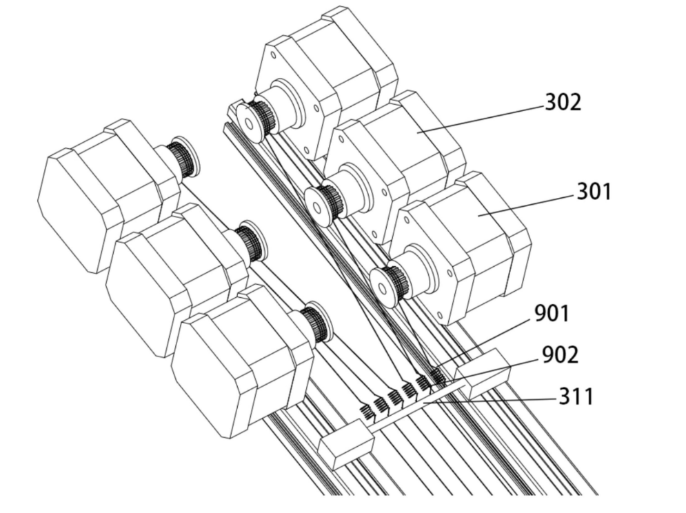
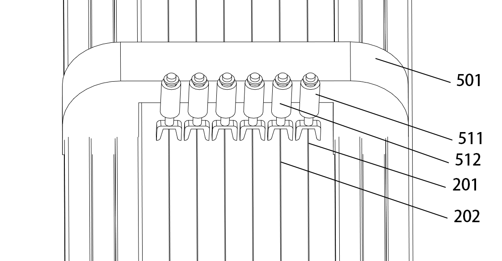
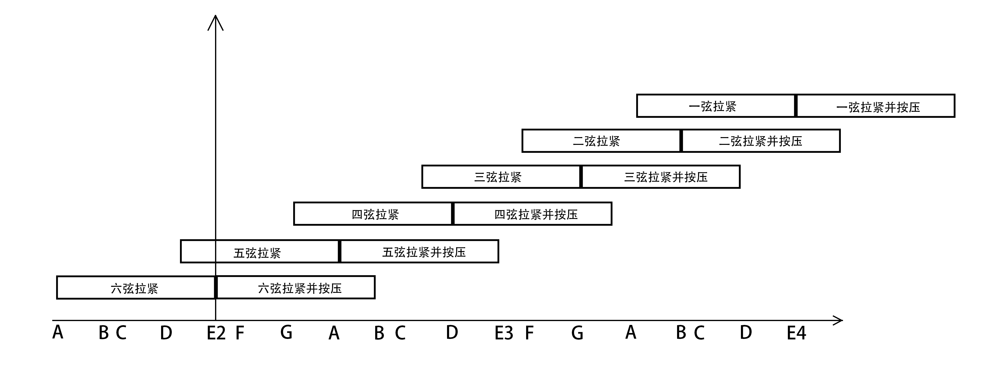

Background and Problem Statement
I studied the electronic keyboard for many years in primary school and taught myself guitar in college. In my view, compared with keyboard instruments, the guitar has poor ergonomics. When playing the guitar, the five fingers of the left hand must precisely press six strings onto the corresponding frets of the fingerboard; the pressure of the strings on the fingertips easily causes pain, and the more complex the chord, the trickier the combination of presses the five fingers must cover, which is especially unfriendly to beginners. And even for those who have practiced to fluency, the act of fretting with the left hand itself limits freedom in arranging music, since there is a physical limit to the number of strings and frets that five fingers can cover at one moment.
What I wanted to make is a guitar-like electronically controlled instrument where the player no longer frets with the left hand, but instead operates a more ergonomically designed input device with the left hand. This device would take the left hand's pressing input, compute it into control signals, and control motors and push-pull electromagnets to produce the pitch of the guitar strings. In this utility model, my claims cover only the string pitch control scheme and do not describe the left-hand input device. The utility model therefore describes something like an electronically controlled guitar that needs no left-hand playing and only requires plucking with the right hand. Worth mentioning is that I call this instrument "a plucked instrument with electronically controlled strings", intending it as an independent new kind of instrument, distinct from the traditional guitar.
Similar Solutions and the State of the Art
Before discussing this problem, we need to know that the pitch produced by a vibrating string is related to its length, linear density and tension. Without changing the string's linear density, by adjusting the string length or changing the tension we can modify the pitch a string instrument produces when plucked. This is also the basic principle of guitar playing.
While conceiving this instrument, I looked up a large number of existing guitar auto-tuning and auto-playing solutions. Guitar tuning is done by turning the string to change its tension and calibrate the pitch, so guitar auto-tuning solutions also use motors to twist the strings. On Instructables there is a DIY automatic guitar tuner project that works this way; among commercial products, Gibson already has a productized solution called Min-ETune.


On the other hand, for guitar auto-playing, the solution that most easily comes to mind is to use push-pull electromagnets to press directly on the strings, changing the string length and thus the pitch when plucked. One that uses this scheme is the Chinese patent "A guitar electric playing device and its circuit" (application no. 201611186617.2). The advantage of this scheme is low cost and ease of programming; the drawback is that it makes the sound of the guitar entirely discrete, losing the essence of a string instrument.
To let the guitar produce continuously varying pitch, some auto-playing guitars use linear moving frames (such as linear rails and slides) to continuously change the position where the string is pressed. The guitar robot "fingers" exhibited at the Deutsches Museum and the Kuzma Self-Playing Guitar designed and built by Michael S. Kuzma both use this design.
Fewer people think of changing pitch by adjusting string tension; this design can be seen in the patent Guitar with High-Speed, Closed-Loop Tension Control (US8440897B1).




My utility model innovatively combines pitch adjustment with string-length adjustment to widen the pitch range covered when playing. This design also helps extend the service life of the strings.
Design: Tension Control Instead of Left-Hand Fretting
The whole instrument is mainly composed of a main frame (1), six metal strings (2), a string-tightening device (3), a pickup device (4), a fretting device (5), extension springs (9) and control components.
The string-tightening device (3) consists of six independent stepper motors. The front end of each string is connected to a metal extension spring (9), whose other end is connected to a metal wire wound on the output shaft of the corresponding motor. When the motor rotates forward or backward, it tightens or loosens this wire, thereby adjusting the string tension through the extension spring; when the tension changes, the open-string pitch changes with it. The extension spring is used instead of tying the string directly to the shaft in order to give the tension changes a little elastic buffer, reducing errors from motor step loss and from the string's own stretching.
The fretting device (5) consists of six evenly spaced push-pull electromagnets, fixed on a bracket with a cross-section shaped like an "open-downward U", whose two vertical parts clamp onto both sides of the main frame. The movable iron core of each electromagnet is positioned vertically directly above the corresponding string, and its end is a U-shaped fork opening toward the string. When energized, the core extends and the fork presses the string toward the fingerboard side, equivalent to the left hand fretting a fret; when de-energized, the core retracts and the string returns to its original length.


The two devices divide the work as follows: the string-tightening device handles "continuous" pitch adjustment (by changing tension), and the fretting device handles "discrete" semitone-level switching (two states, pressed or not). Tension adjustment alone could in theory also vary pitch continuously, but the tension range is limited by the strength of the string material and the mechanical travel, and cannot cover the pitch range a whole guitar needs; fretting devices alone would require a mechanism at every fret, going back to the old path of the "matrix" schemes in the survey above. Stacking the two — the string-tightening device first sets the open-string pitch to some base, and the fretting device then adds a fixed semitone step on top of that — gets sufficient pitch range coverage with a small number of actuators. According to the calculated data, the two intervals "tightened" and "tightened and pressed" of a single string join to cover 14 semitones; with six strings stacked and their intervals staggered end to end, the overall range of the instrument reaches 3 octaves, which basically covers the range needed for common guitar repertoire.

Since the motors can directly control the tightness of the strings and the instrument is fitted with a pickup, tuning calibration can be done automatically in a closed loop. In calibration mode, the instrument first uses the string-tightening device to set the tension of the six strings to their initial values and releases the fretting device. The player then plucks each open string in turn; the processor reads the vibration sound signal collected by the pickup, computes the actual frequency and compares it with the preset initial frequency. If the actual tension deviates from the target value because of string aging or motor step loss, it adjusts the string-tightening device in reverse for closed-loop correction.
Patent Grant
This structural design was finally filed as a utility model patent under the title "A plucked instrument with electronically controlled strings", application/patent number ZL 2022 2 2815648.7, filing date October 25, 2022, with Jilin University as the patentee and myself as the inventor. During preliminary examination, the China National Intellectual Property Administration issued one office action, pointing out that although the specification clearly described the specific structures of the string-tightening device and the fretting device, its description of "how the control processor implements the control process" was not specific enough, which raised a clarity issue. In response, I prepared a thorough written statement arguing that the core of what the claims seek to protect is in fact the mechanical structure of the string-tightening device and the fretting device and their connections — that is, a structural scheme that "solves the technical problem of fretting without relying on any specific software program or method in the control processor" — while the part where the control processor drives the stepper motors to rotate forward and backward and drives the electromagnets to extend and retract is a routine, customary technical means to a person skilled in the art, and does not need a specific programming implementation described in the specification. To this end, I looked up a large number of related patents in the field of musical instrument automation to prove that control processors are widely used in this field. The examiner accepted this statement, and the patent was finally granted smoothly:
- Grant publication number: CN 218631356 U
- Grant publication date: March 14, 2023
- Patent type: Utility model patent
- Patent term: ten years from the filing date
Because I didn't want to pay the annual fees, I have now abandoned the utility model patent.
Outcome
It started as the wild idea of someone who couldn't learn guitar, and went on to me designing the mechanical structure, writing the specification, responding to the office action, and finally actually getting the utility model granted. I am very glad to have gone through this whole process. On the other hand, I saw that the many guitar automation solutions and patents on the market have not been turned into actual products, and I realized there is still a gap between ideas and commercialization. Commercialization has more to do with the value proposition, target market, customer acquisition and monetization paths than with the implementation of a specific solution. Perhaps my electronically controlled instrument has no commercial value, but at least this experience has started to inspire me to think more.